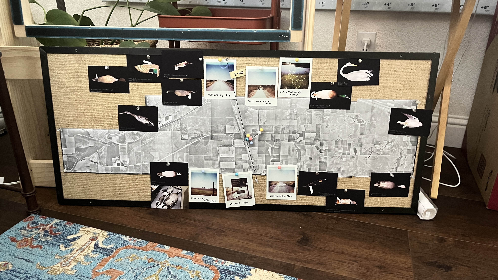

premise
Hi! I'm Zahra Baxi, an MFA Design student at UC Davis. I'm a product designer that works across the disciplines of interactive design, social responsibility, & human-centered design.
I grew up in Davis almost my whole life. The Yolo Basin is a 15 minute drive from my childhood home and I never visited until I started this thesis. I really misunderstood the space. I frequently passed by on commutes to Sacramento and as someone who didn't consider themselves a birder (as I only really knew of it as a popular birding spot) I would drive by not really paying attention. After moving back to Davis for my masters I learned a lot more about the space from a different perspective, now being a designer within enviornmental spaces.
This thesis explores the complicated and intricate relationship between the floodplain, the birds, and the farmers that all share the same space. I wanted to understand how one place can be all three of those things at once, and how to design for that complexity without flattening it. I also wanted to weave in my story of exploring and experiencing the basin for the first time, and how that personal journey of discovery shaped my relationship to the place and ultimately this project.


"This field is complex. The same field holds floodwater in January, rice in July, and birds all year."
field notes, Yolo Basin
The basin floods in winter, supports farming in summer, and is a major stop for migratory birds year round. I wanted to understand how one place does all three.
the place

The Yolo Basin is about 3 miles from downtown Davis and runs 41 miles along the Sacramento River. Most people only see it from the freeway.
It gets intentionally flooded in winter to take pressure off Sacramento. When the water drains, farmers come back in for rice season. The wildlife area covers about 16,000 acres of it.
It protects Sacramento from flooding. That's the original reason it exists.
Flooded fields become temporary wetlands. Fish, insects, plants show up fast.
Rice farmers use the same water infrastructure. Food and flood control share the same land.
Hundreds of thousands of birds stop here every year. It's a major point on the Pacific Flyway.


the question
How do you represent a place that is genuinely different things at different times of year?
Most maps show the basin as one thing: a flood zone, a wildlife area, or farmland. But those are all true at the same time. The categories overlap in practice even if they're kept separate on paper.
What if a design tool showed all the overlapping uses at once instead of picking one? Would that change how people think about the place?
That's the core question. Whether showing the full picture actually shifts how people relate to a landscape they usually just drive past.
method
-
01
field observation
Multiple visits across fall and winter to document the basin across seasons and conditions.
-
02
mapping systems
Building layered spatial maps that show the basin's overlapping land uses in the same view.
-
03
interaction design
Designing an interactive site where you can move through the systems rather than just read about them.
-
04
visual translation
Making ecological data readable for people who aren't already familiar with the basin.

The goal isn't to simplify the basin. It's to make the complexity feel approachable rather than overwhelming.
thesis
Can design make a complicated place understandable without flattening it?
This project uses interactive and information design to help people understand the Yolo Basin as multiple things at once: flood infrastructure, agricultural land, and wildlife habitat that share the same space.
The goal is to make the data feel like something you move through over time, not just a static snapshot of a place.
The overlapping uses aren't contradictions to resolve. They're what the basin actually is.